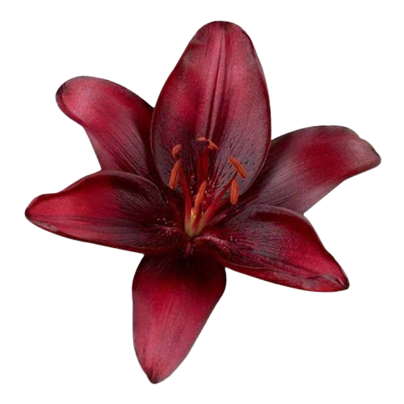
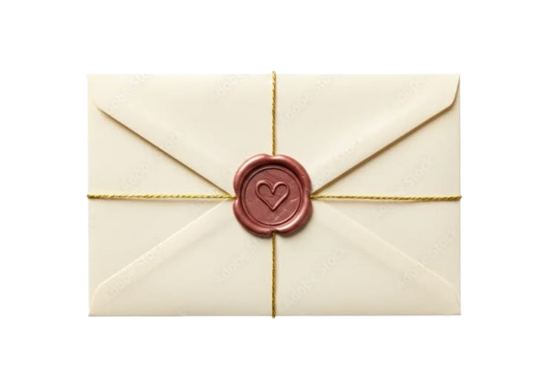

Feliz cumpleaños, mi rayito de sol
💌
Enter a Passcode

Me nace decir que te estás convirtiendo en una de mis mejores personas en mi vida, no solo por hablarlo, sino porque lo vivo día a día, me sorprendes de una manera que no sabría decir si eres alguien normal, no en el mal sentido, sino que eres alguien que siempre parece llevar la vista al frente, que tiene una visión por lo que le apasiona y alguien que habla con mucho entusiasmo de lo que le gusta. Me haría mucha ilusión que confíes poco a poco en este día y puede llegar a ser uno de los más bonitos del año para ti, no desde el miedo sino desde la confianza que depositas en mí, te amo mucho mi corazón de melón

Toca para abrir
Obviamente supongo que recuerdas perfectamente la primera foto, porque yo si, yo si recuerdo hasta sobre qué hablamos ese día, la fecha y que me fugué de la reunión de mi hermano, todo, con tal de salir un momento contigo. También tu, fuiste a bañarte y regresar para vernos. Recuerdo el miedo que tenía porqué me dieras un beso, recuerdo cómo me me empezaste a gustar, cómo empece a esperar con mucha ilusión tus invitaciones a salir, recuerdo cómo me empecé enamorar, es lindo, tanto que te da unas sensaiones en el estómago com esas que te dan emoción cada que piensas en esa personita y tú eras mi personita especial y obviamente aún lo eres y mucho más. Esta segunda foto me fasina, sabes porqué? Porque me sentí tan feliz que fueras conmigo a la iglesia y que aún así no te hubieras ido, agradezco un montón eso. Recuerdo que también estabas incómodo, por lo que podría decir la gente, pero tu compañia me hizo mucha paz al final de misa y esa vez no solo di mis agradecimientos comunes, agradecí a Diosito que hayas estado conmigo, que estuvieramos crecienco como pareja y que pedí que te protegiera mucho de todo mal. Esta últma diría que es mi favorita actual, simplemente me encanta como nos vemos, tú dandome un besito y yo recibiendolo gustosamente. TE AMO MUCHÍSMO ATTE: CORAZÓN DE MELÓN